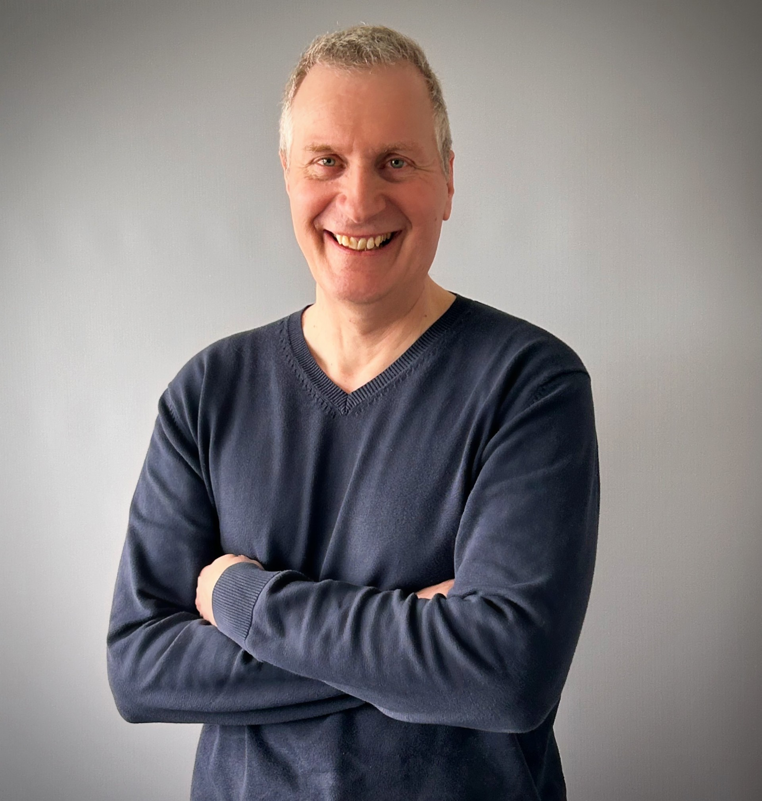

Full-Stack System- & Software-Entwickler – von der Systemebene bis zur fertigen Anwendung. Systemnahe C++/SDK-Entwicklung · Web & Datenbanken · Angewandte KI · Langjährige Erfahrung
Vertikale Tiefe statt nur einer Schicht.
Als langjähriger Full-Stack-Entwickler decke ich die gesamte vertikale Tiefe ab – vom Betriebssystem und der Datenbank über Treiber, DLLs und Backend bis zur fertigen Anwendung. Mein Kern ist die systemnahe C++-Entwicklung und die saubere Integration von Hardware und SDKs. Dazu kommen datenbankgetriebene Web-Anwendungen auf einem tiefen LAMP-Stack sowie der produktive Einsatz von generativer KI. Aus vielen Jahren im 7×24-Betrieb bringe ich die Perspektive mit, die zählt: Ich baue Lösungen, die sich nicht nur programmieren, sondern auch betreiben und warten lassen.
Eine Besonderheit: Ich bin zusätzlich ausgebildeter Hochbauzeichner und zu Hause in CAD, Blender und 3D-Visualisierung. Damit verbinde ich zwei Welten, die selten zusammenkommen – Architektur/Planung und Software-Entwicklung. Genau daraus entstehen Lösungen wie parametrische CAD-Automation oder interaktive 3D-Visualisierung im Browser.
Vier Standbeine – einzeln oder kombiniert einsetzbar.
Performante, stabile Software nah an Betriebssystem und Hardware – inklusive sauberer Anbindung an bestehende Systeme.
Von der Datenbankmodellierung über das Backend bis zur interaktiven Oberfläche – inklusive Serverbetrieb und Deployment.
Praktische Integration von KI in bestehende Abläufe – für Automatisierung, Prototyping und generative Inhalte.
Ausgebildeter Hochbauzeichner: CAD, 3D-Modellierung, Visualisierung und Animation – die Brücke zwischen Architektur/Planung und Software.
Nach Reifegrad geordnet.
Zeigt die Bandbreite von systemnah bis Web.
Client/Server-Lizenzverwaltung mit Verschlüsselung.
Interaktive 3D-Sternenhimmel-Visualisierung im Browser.
Automatisierung parametrischer Planungsprozesse. (in Entwicklung)
Langjährige Praxis in Entwicklung, Datenbanken und Systembetrieb.
IT-Verantwortung, CAD-Infrastruktur, Optimierung des LAMP-Stacks.
Betrieb Siebel CRM, Automatisierung mit Python/Bash.
Infrastruktur, Datenbanken und Web-Anwendungen.